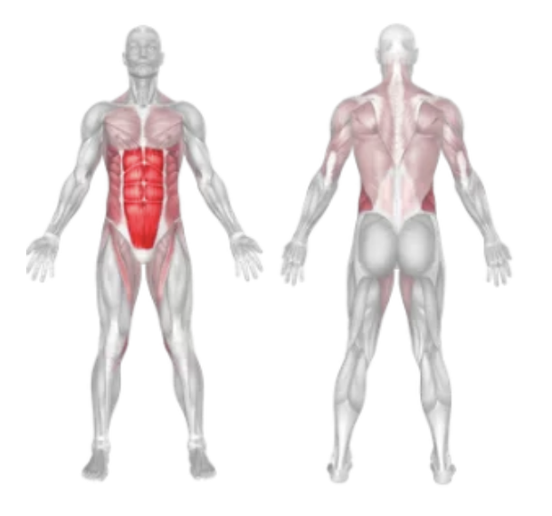
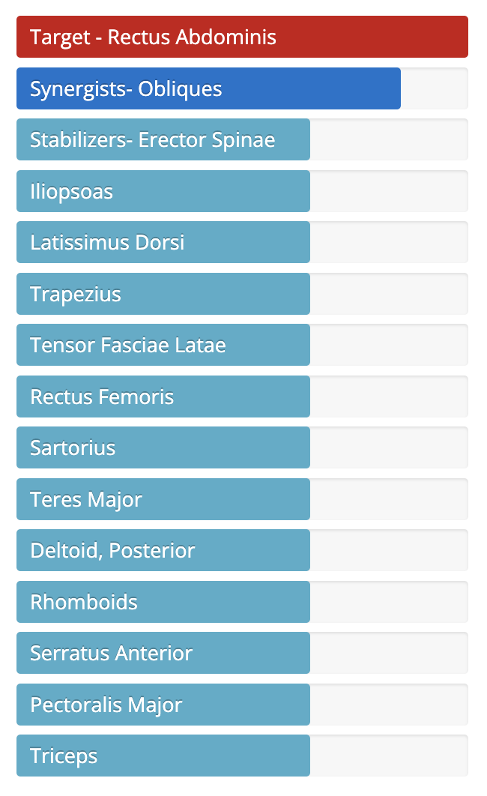

Setup
- Attach a rope handle to the high pulley of a cable machine.
- Kneel down facing the machine, holding one end of the rope in each hand.
- Position the rope behind your neck or on either side of your head, with elbows bent and close to your body.
- Keep your hips slightly back and spine neutral. Engage your core before beginning.
Execution
- Crunch Down: Exhale as you contract your abs and curl your torso downward toward your knees.
- Squeeze: At the bottom of the crunch, hold for a second to maximize abdominal tension.
- Controlled Return: Inhale as you slowly return to the starting position without relaxing completely.
Tips for Effectiveness
- Focus on the Abs: Avoid pulling with your arms—let the abs do the work.
- Spinal Flexion: Make sure you're curling your spine, not hinging at the hips.
- Stay Controlled: Perform the movement slowly and avoid using momentum.
- Breathing: Exhale as you crunch, and inhale as you return.
Benefits of Cable Crunch
- Targeted Ab Activation: Directly works the rectus abdominis for six-pack development.
- Adjustable Resistance: Easily increase or decrease weight for your fitness level.
- Better Isolation: Provides more control and isolation than bodyweight crunches.
- Posture and Core Strength: Improves overall core strength, stability, and posture.
Muscles Worked in Cable Crunch


Do you want to change the language of this page?